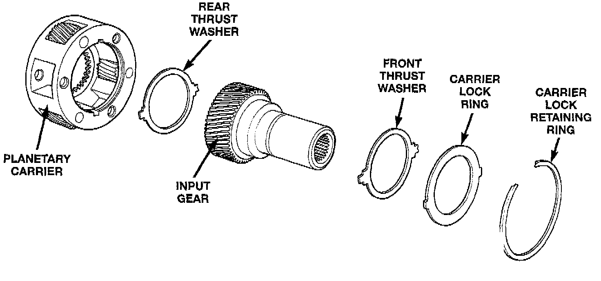
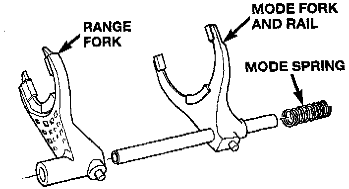
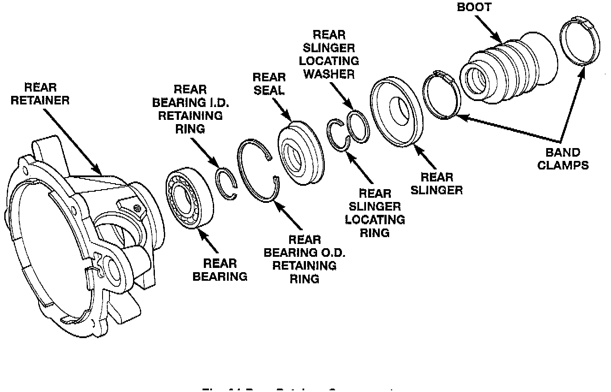
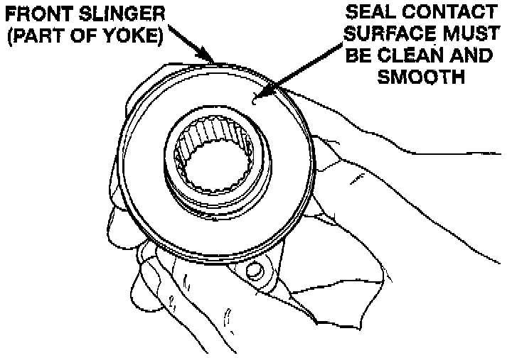
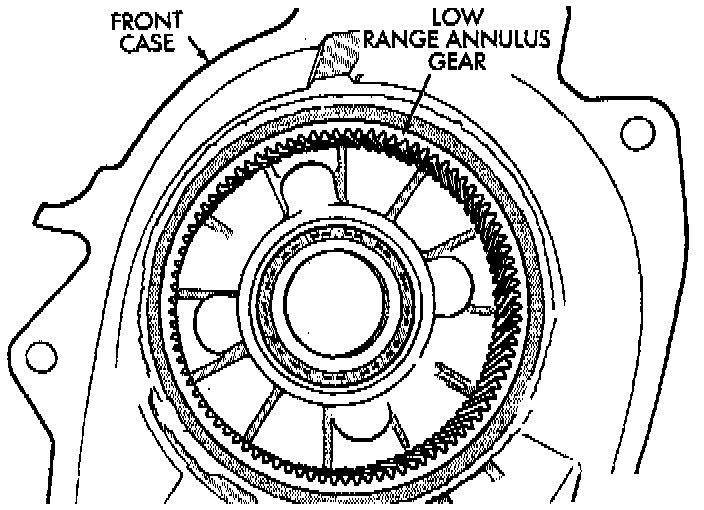

Cleaning and Inspection
NV242 TRANSFER CASEClean the transfer case parts with a standard parts cleaning solvent. Remove all traces of sealer from the cases and retainers with a scraper and all purpose cleaner. Use compressed air to remove solvent residue from oil feed passages in the case halves, retainers, gears, and shafts.
The oil pickup screen can be cleaned with solvent. Shake excess solvent from the screen after cleaning and allow it to air dry. Do not use compressed air.
MAINSHAFT/SPROCKET/HUB INSPECTION
Inspect the splines on the hub and shaft and the teeth on the sprocket. Minor nicks and scratches can be smoothed with an oilstone. However, replace any part is damaged.
Check the contact surfaces in the sprocket bore and on the mainshaft. Minor nicks and scratches can be smoothed with 320-400 grit emery cloth but do not try to salvage the shaft if nicks or wear is severe.

INPUT GEAR AND PLANETARY CARRIER
Check the teeth on the gear. Minor nicks can be dressed off with an oilstone but replace the gear if any teeth are broken, cracked, or chipped. The bearing surface on the gear can be smoothed with 300 - 400 grit emery cloth if necessary.
Examine the carrier body and pinion gears for wear or damage. The carrier will have to be replaced as an assembly if the body, pinion pins, or pinion gears are damaged.
Check the lock ring and both thrust washers for wear or cracks. Replace them if necessary. Also replace the lock retaining ring if bent, distorted, or broken.

SHIFT FORKS/HUBS/SLEEVES
Check condition of the shift forks and mode fork shift rail. Minor nicks on the shift rail can be smoothed with 320 - 400 grit emery cloth.
Inspect the shift fork wear pads. The mode fork pads are serviceable and can be replaced if necessary. The range fork pads are also serviceable.
Check both of the sleeves for wear or damage, especially on the interior teeth. Replace the sleeves if wear or damage is evident.

REAR RETAINER/BEARING/SEAL/SLINGER/BOOT
Inspect the retainer components. Replace the bearing if rough or noisy. Check the retainer for cracks or wear in the bearing bore. Clean the retainer sealing surfaces with a scraper and all purpose cleaner. This will ensure proper adhesion of the sealer during reassembly.
Replace the slinger and seal outright; do not reuse either part.
Inspect the retaining rings and washers. Replace any part if distorted, bent, or broken. Reuse is not recommended. Also replace the boot if cut or torn. Replace the boot band clamps, do not reuse them.

REAR OUTPUT SHAFT/YOKE/DRIVE CHAIN
Check condition of the seal contact surfaces of the yoke slinger. This surface must be clean and smooth to ensure proper seal life. Replace the yoke nut and seal washer as neither part should be reused.
Inspect the shaft threads, sprocket teeth, and bearing surfaces. Minor nicks on the teeth can be smoothed with an oilstone. Use 320 - 400 grit emery to smooth minor scratches on the shaft bearing surfaces. Rough threads on the shaft can be chased if necessary. Replace the shaft if the threads are damaged, bearing surfaces are scored, or if any sprocket teeth are cracked or broken.
Examine the drive chain and shaft bearings. replace the chain if stretched, distorted, or if any of the links bind. Replace the bearings if rough, or noisy.

LOW RANGE ANNULUS GEAR
Inspect annulus gear condition carefully. The gear is only serviced as part of the front case. If the gear is damaged, it will be necessary to replace the gear and front case as an assembly. Do not attempt to remove the gear.
FRONT-REAR CASES AND FRONT RETAINER
Inspect the cases and retainer for wear and damage. Clean the sealing surfaces with a scraper and all purpose cleaner. This will ensure proper sealer adhesion at assembly. Replace the input retainer seal; do not reuse it.
Check case condition. If leaks were a problem, look for gouges and severe scoring of case sealing surfaces. Also make sure the front case mounting studs are in good condition.
Check the front case mounting studs and vent tube. The tube can be secured with Loctite 271 or 680 if loose. The stud threads can be cleaned up with a die if necessary. Also check condition of the Fill drain plug threads in the rear case. The threads can be repaired with a thread chaser or tap if necessary. Or the threads can be repaired with Helicoil stainless steel inserts if required.
OIL PUMP/OIL PICKUP
Examine the oil pump pickup parts. Replace the pump if any part appears to be worn or damaged. Do not disassemble the pump as individual parts are not available. The pump is only available as a complete assembly. The pickup screen, hose, and tube are the only serviceable parts and are available separately.